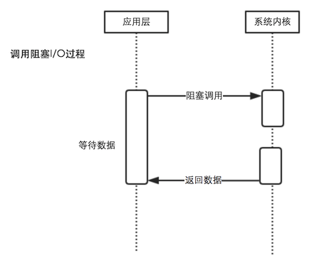

深入浅出Node
0. 总结
这本书,从实战方面诠释了NODE的原理
笔者第一次读完时,很多是跳过的,因为没有相关的实践操作,留个影响,相信以后会有想起来应用的时候
4星(322页)
1. Node简介
1.2 Node的命名和起源
Ryan Dahl是一名资深的c/c++程序员
他认为:设计高性能Web服务器的几个要点:
- 事件驱动
- 非阻塞IO
他的在选JS之前,其他语言的考虑
- c门槛太高
- haskell: 作者自己玩不6
- lua: 自身已经有很多阻塞的库
- Ruby: 性能不好
1.3 Node给javascript带来的意义
Node = Chrome - HTML - Webkit
1.4 Node的特点
1.4.1 异步I/O
1.4.2 事件与回调函数
事件的编程方式具有轻量级、轻耦合、只关注事物点等优势,但是在多个异步任务的场景下,事件和事件之间各自独立,如何协作是一个问题
1.4.3 单线程
优点:
- 不用像多线程那样处处在意状态同步问题
- 不存在死锁
- 不存在线程上下文交换带来的性能开销
缺点
- 无法利用多核CPU
- 错误会引起整个应用退出
- 大量计算占用CPU导致无法继续调用异步I/O
在浏览器中主线程可以负责UI,而把大量的计算放在webworker
而Node,主线程负责响应,而可以child_process进行大量计算
这样
缺点1变成了: 可以利用多核进行大量计算 缺点3变成了: 可以利用多核进行计算
但是缺点2呢?.
1.5 Node的应用场景
1.5.1 I/O密集型
2. 模块机制
2.2 Node的模块实现
2.2.1 优先从缓存加载
其实无论是webpack还是浓的,都是从优先缓存读取的
所以require里的文件只会被第一次引用的时候执行,然后缓存起来
2.2.2 路径分析和文件定位
默认不带文件后缀时,会按.js,.json,.node 的顺序查找,所以一般只会隐藏.js,而.json,.node不会隐藏后缀
2.2.3 模块编译
- .js: 通过fs模块同步读取后编译执行
- .node: c/c++编写的拓展文件,通过dlopen()方法加载最后编译生成的文件
- .json: 通过fs同步读取,然后JSON.parse()解析返回结果
- 其余拓展名文件,会被当做js文件载入
3. 异步I/0
3.2 异步I/0实现现状
3.2.1 异步I/O与非阻塞I/O
阻塞I/O:

与阻塞I/O对应的是非阻塞I/O
两者的主要区别是
- 阻塞I/O完成整个获取数据的过程
- 非阻塞I/O则不带数据直接返回,要获取数据,还需要通过文件描述符再次读取,需要通过轮询多次访问
3.5 事件驱动与高性能服务器
几种经典的服务器模型
- 同步式
- 每进程/每请求
- 每线程/每请求
每线程/每请求的方式目前被apache所使用
node通过事件驱动方式处理请求,无需为每个请求创建额外的对应进程,可以省掉创建线程和销毁线程的开销,同时操作系统在带哦度任务时因为线程较少,上下文切换代价很低.这是Node高性能的一个原因
4. 异步编程
4.2 异步编程的优势与难点
4.2.2 难点
- 异常处理: 原则上只需执行调用者传入的回调函数,正确传递回异常提供调用者的判断
- 函数嵌套过剩
- 阻塞代码
- 多线程编码
- 异步转同步
4.3 异步编程解决方案
- 事件发布/订阅
- Promise/Deferred模式
- 流程控制库
4.3.2 Promise/Deferred模式
Promises/A的抽象定义
- Promises操作只会处于三种状态中的一种: 未完成,完成,失败
- Promises的状态只会出现从未完成向完成或失败转化,不能逆反,完成和失败也不能互相转化
- Promises的状态一旦转化,将不能改变
(笔者疑问: 当我们获取到json数据时,是在完成态,然后发现json数据格式不对,不能从完成转到失败?)
Api定义上,一个Promise对象只要具备then方法即可
- 接受完成态、错误态的回调方法,在操作完成或出现错误时,将会调用对应方法
- 可选地支持progress事件回调作为第三个方法
- then()方法只接受function对象,其余对象将会被忽略
- then()方法继续返回promise对象,以实现链式调用
then(fulfilledHandler, errorHandler, progressHandler)
Promise是高级接口,事件是低级接口,低级接口可以构成更多更复杂的场景,高级接口一旦定义,不太容易改变,但对于解决典型问题非常有效
4.3.3 流程控制库
- 尾触发和next
- async
- step
5. 内存控制
5.1 V8的垃圾回收机制与内存限制
5.1.3 V8的对象分配
查看内存分配
> process.memoryUsage()
{ rss: 21692416, heapTotal: 9587488, heapUsed: 4757408 }
可以在启动node时,更改内存限制
node --max-old-space-size=1700 test.js //单位为MB 设置老生代内存空间
node --max-new-space-size=1024 test.js //单位为kb 设置新生带内存空间
一旦设置启动后,不能更改
为什么V8要限制内存? 因为1.5GB的垃圾回收,V8做一次小的垃圾回收需要50毫秒以上,做一次非增量的垃圾回收深圳要1s以上
5.1.4 V8的垃圾回收机制
V8的垃圾回收策略主要基于分代式垃圾回收机制
回收算法 Mark-Sweep Mark-Compact Scavenge
速度 中等 最慢 最快
空间开销 少(有碎片) 少(有碎片) 双倍空间(无碎片)
是否移动对象 否 否 是
5.1.5 查看垃圾回收日志
启动时添加--trace_gc参数,会在打印台输出垃圾回收信息
加上--prof可以得到V8执行时性能分析数据,其中包含垃圾回收执行时占用时间
可以通过linux-tick-processor(在node源码的tool里) 用于统计日志信息
6. 理解Buffer
6.1 Buffer结构
Buffer是一个像Array的对象,主要用于操作字节
6.1.1 模块结构
Buffer是一个典型的Javascript与C++结合的模块
性能由C++实现,并非性能相关的javascript实现
node_buffer(c++)->Buffer/SlowBuffer(javascript核心模块)
6.2 Buffer的转换
6.2.2 Buffer转字符串
buf.toString([encoding], [start], [end])
7. 网络编程
8. 构建web应用
8.1 基础功能
8.1.4 Cookie
Cookie的性能影响
- 为静态组件使用不同的域名
9. 玩转进程
10. 测试
这里讲了测试的基础概念,讲述了单元测试,自动集成和性能测试的一些基本方法
11 产品化
11.5 监控报警
11.5.1 监控
- 日志监控
- 响应时间
- 进程监控
- 进程监控
- 磁盘监控
- 内存监控
- CPU占用监控
- CPU load监控
- I/O监控
- 网络监控
- 应用状态监控